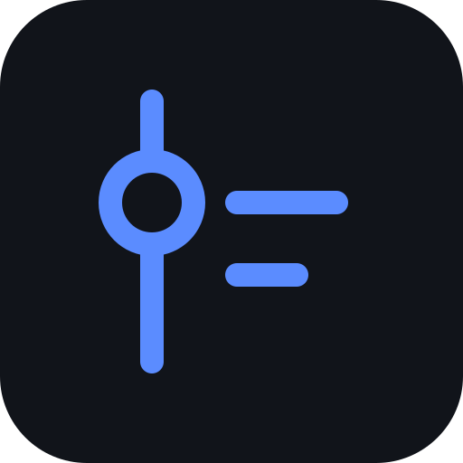

Enter your PIN to continue.
or
Nothing on the wheel yet — add some options below.
It landed on
Every save becomes a commit in a private repo, so your devices stay in sync and you get a history. The token stays on this device.
Scan the code with the new device's camera, or open the link there. In the LifeLog app use Scan QR code instead — the camera opens links in the browser, not the app.
You're on a local/localhost URL, so this link only works on this computer. Open your published site (e.g. GitHub Pages) and copy the link from there to use it on other devices.
The setup link is too long for a QR code — use the copy button below to share it instead.
The link contains your access token — only share it with your own devices.
Every save is also written to a LifeLog folder the Files app can see (where is on the line above), with one copy a day for the last two weeks in daily. On Android it stays even if the app is cleared or uninstalled. To bring one back: Import & export → Everything → Import, and pick the file.
Every save is also written to a .json file on this computer — a local backup, or a way to sync through a shared Drive/Dropbox folder. Boards and trips are files of their own; put boards.json and travel.json beside the data file. Chrome and Edge on a computer only.
Your data stays on this device and on GitHub.
Importing adds to what you have, never replaces it, and lets you pick what comes in first. Anything you already have is skipped. JSON keeps everything; CSV is for spreadsheets and keeps what fits in a row, so an entry's cover, rating and notes stay behind. A tab's import takes its own part of any LifeLog file, a full backup included.
CSV import also reads the yearly pivot a Google Sheets export makes: year blocks, 12 month columns, a note on each real transaction. A purchase recorded against a year rather than a month lands on 1 January.
Your last ~40 saves, plus older ones from GitHub when it's connected. Undo takes back one change; Restore rolls everything back to that save. Neither deletes anything here.
No saves yet — your history will appear here once you make your first change.
Anything deleted within your save history. Restoring one brings back just that item.
Nothing recently deleted.
Boards keep their own history. Open a version to see its boards and bring back any that have changed or gone since.
Trips keep their own history too. Open a version to see its trips and bring back any that have changed or gone since, with their places.
This device only. It keeps people out of the app; it doesn't encrypt your data.
Forgot it? The lock screen can wipe this device's copy; reconnect sync afterwards to get your data back.
Fingerprint/Face ID isn't available on this device or browser.
On top of the PIN, which stays as the fallback.
This device only. Cover art, month cards and each list's options are on that tab's View button.
This device only. The arrows reorder, the star is the mode a tab opens on — with three modes, the middle one. Tabs you turn off leave the tab bar.
Where covers, ratings and release dates come from. Syncs to your other devices.
The fallback is tried when the source finds nothing; Sync on an item searches both. "Steam" takes an App ID from the store URL. "RAWG + Steam + GG.deals" also finds the Steam ID, for a price too.
Open Library, AniList, Jikan, Google Books and MusicBrainz need no key.
Setup is in proxy/README.md. Leave it blank if you use none of those.
The Android app reaches these itself and doesn't use the proxy. Keep it set if you use them in a browser too.
You pick what comes in, and nothing already in your backlog is added twice. The automatic check only tells you what's new.
Your wishlist must be public (Steam → Privacy Settings → Game details), and this goes through the CORS proxy on Media lookups.
A one-time backfill: every game with time in it becomes a Timeline entry in the month you last played it, with the hours as its length, in the wishlist's category. Steam doesn't know what you finished, so you review the list: two hours or more starts ticked. Game details must be public, like the wishlist.
Retry looks up again the items still called "Steam app <id>" (usually Steam rate-limiting a large first sync) and fixes the ones that resolve.
Backfill fills in what Steam-synced games lack: rating, length and year from RAWG (needs a RAWG key), and Steam's description (needs the proxy). Never touches title, cover or App ID.
On Letterboxd: Settings → Import & Export → Export your data. Pick the zip it gives you (or its CSV files). Your diary and watched films become Timeline entries on the day you saw them, with your stars; the watchlist goes to the Backlog. You review the list before anything comes in.
Needs no key or proxy, but the list must be public (AniList → Settings → Lists → untick "Set anime/manga list to private"). Set one side to "Don't import" to bring in only the other.
When you pay with this phone, LifeLog offers to add it. Add files it where that place went last time; tapping the offer opens the form filled in. A payment in another currency only opens the form, for its rate.
Android has to give LifeLog notification access for this, which lets it see your notifications. It reads only Google Wallet's, and nothing leaves the phone. If Android says the setting is restricted, open LifeLog's App info, tap ⋮ and choose Allow restricted settings, then try again.

What you did, what's next, what it cost. Yours, on your devices and in your own GitHub repo; nothing goes anywhere you didn't set up.
Each one is asked only for what you add or connect, with the keys and accounts you set up under Connected services.
Asks each unreleased backlog item's source for its date again, and changes nothing else. Steam, RAWG, TMDB and AniList items only.
The breakdown is a line per category under a month, with how many entries it got. A month with one category doesn't need it.
Separately reads 300 (+12 EA, +43 unreleased, +8 dropped) rather than 363 — the first number is what you could start today.
Whether each block at the end of a category can fold behind a bar like ▸ Unreleased 12, and how it starts. A folded block isn't drawn at all.
The breakdown is a line per category under a month, with what you spent on each. Everything here but the currency is this device only.
In pixels, and shared by the Timeline and the Ledger.
Only fire when you're not typing in a field, so they stay out of the way of titles, notes, and search.
Keep it as
This is unusual — normally differences between devices merge on their own. Pick the version to keep and it'll be copied to the others; nothing is deleted, so anything unique to the version you don't pick may still be recoverable from Settings → History afterwards.